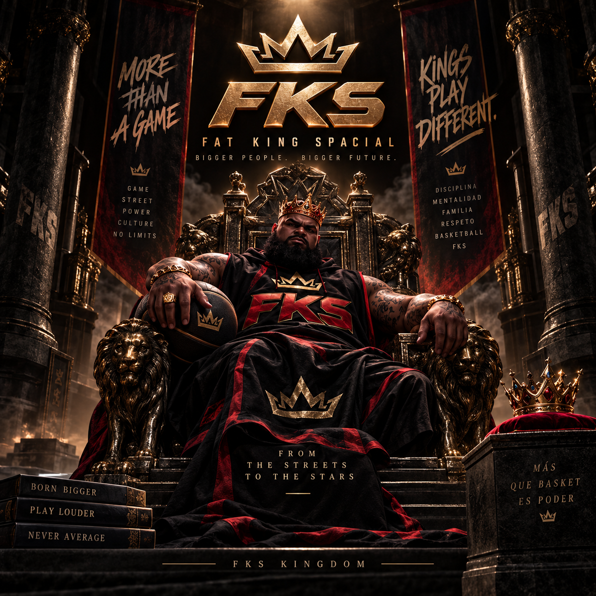

INTELIGENCIA ARTIFICIAL
Automatización de procesos, herramientas inteligentes e integración de IA.
↗Transformamos ideas y problemas reales en marcas, plataformas y soluciones digitales con tecnología e inteligencia artificial.
DESCUBRE NUESTRO TRABAJO ↘Diseño, tecnología y desarrollo de productos que nacen de necesidades concretas.

01 / BRAND & PRODUCTIdentidad de marca · Streetwear · Desarrollo de producto
Web de pedidos y herramientas de gestión digital
ERP sectorial · Automatización · Gestión empresarial
Integramos estrategia, desarrollo y creatividad en proyectos que tienen una finalidad empresarial.
Automatización de procesos, herramientas inteligentes e integración de IA.
↗Webs corporativas, aplicaciones, plataformas y sistemas a medida.
↗Conceptualización, prototipos y desarrollo de nuevas soluciones de negocio.
↗Identidad visual, dirección creativa y comunicación de marcas.
↗COTINUSA STUDIO combina visión empresarial, creatividad y tecnología para convertir oportunidades en soluciones útiles. Cada proyecto comienza entendiendo el negocio y termina con una propuesta diseñada para funcionar.
Una marca no aparece terminada. Evoluciona con cada boceto, cada pregunta y cada nueva visión.

Una identidad tipográfica sencilla, el punto de partida de nuestra historia.

La bombilla y el cerebro comenzaron a representar nuestras ideas y nuestra apuesta por la innovación.

La antigua Kotinousa y el paisaje de Cádiz nos inspiraron a conectar nombre, territorio y símbolo.

Exploramos cómo integrar la inicial de COTINUSA con la geografía, la arquitectura y una nueva estética.
Una identidad dorada que reúne origen, visión creativa y ambición tecnológica.
Diseñar no es solo crear una imagen. Es encontrar el significado que hace única a una idea.
Cuéntanos qué quieres crear o qué problema necesitas resolver.
HABLEMOS DE TU PROYECTO ↗